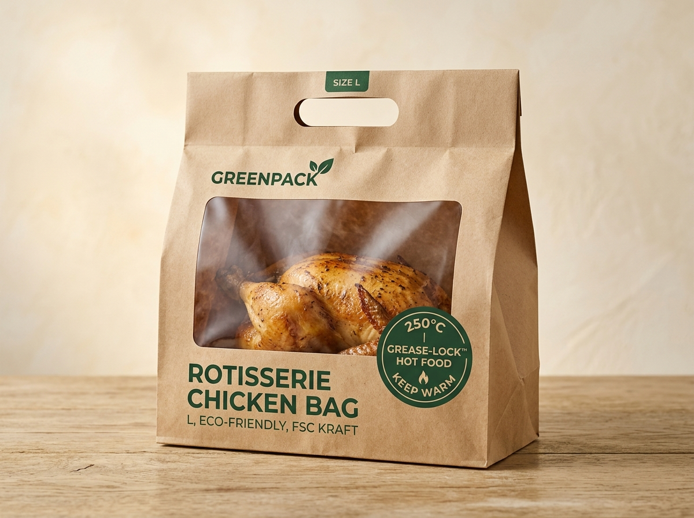
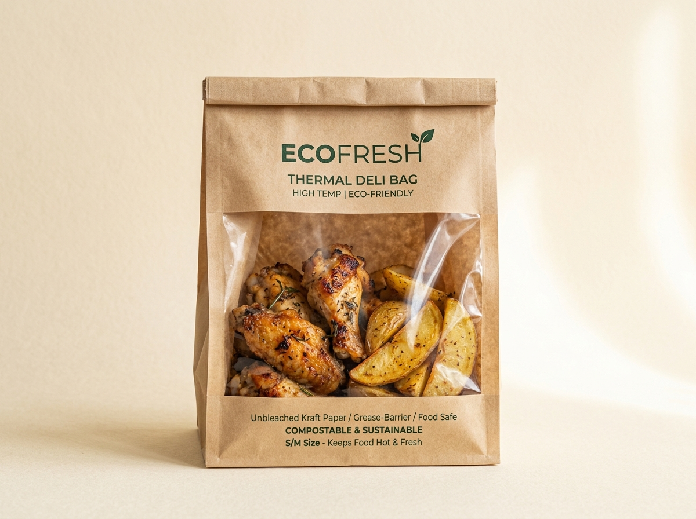
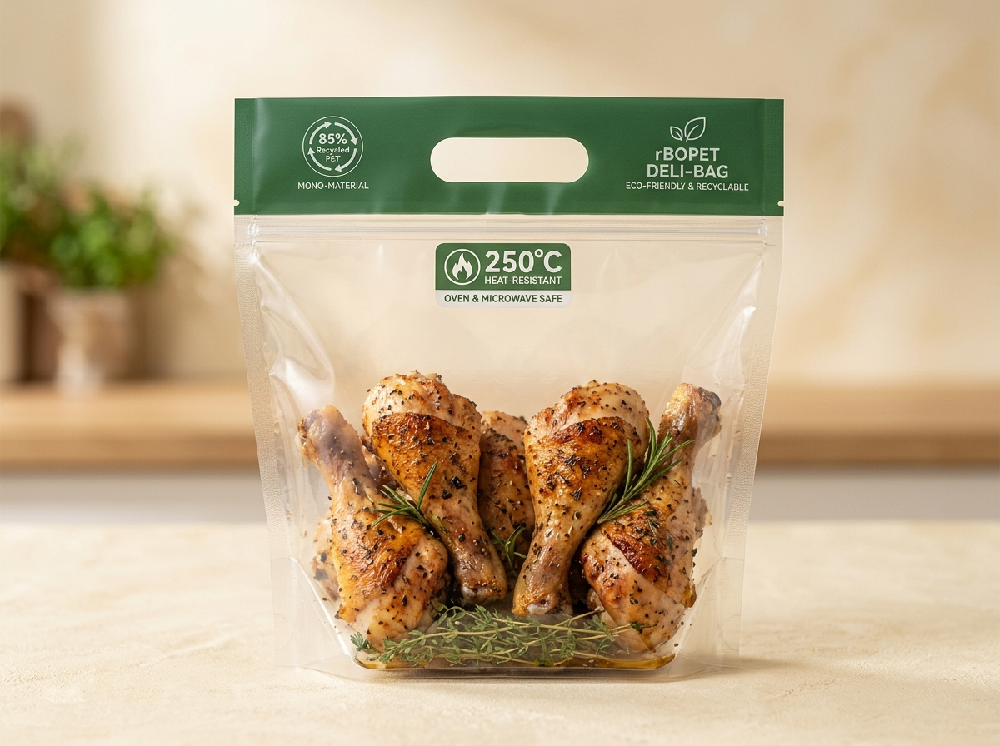
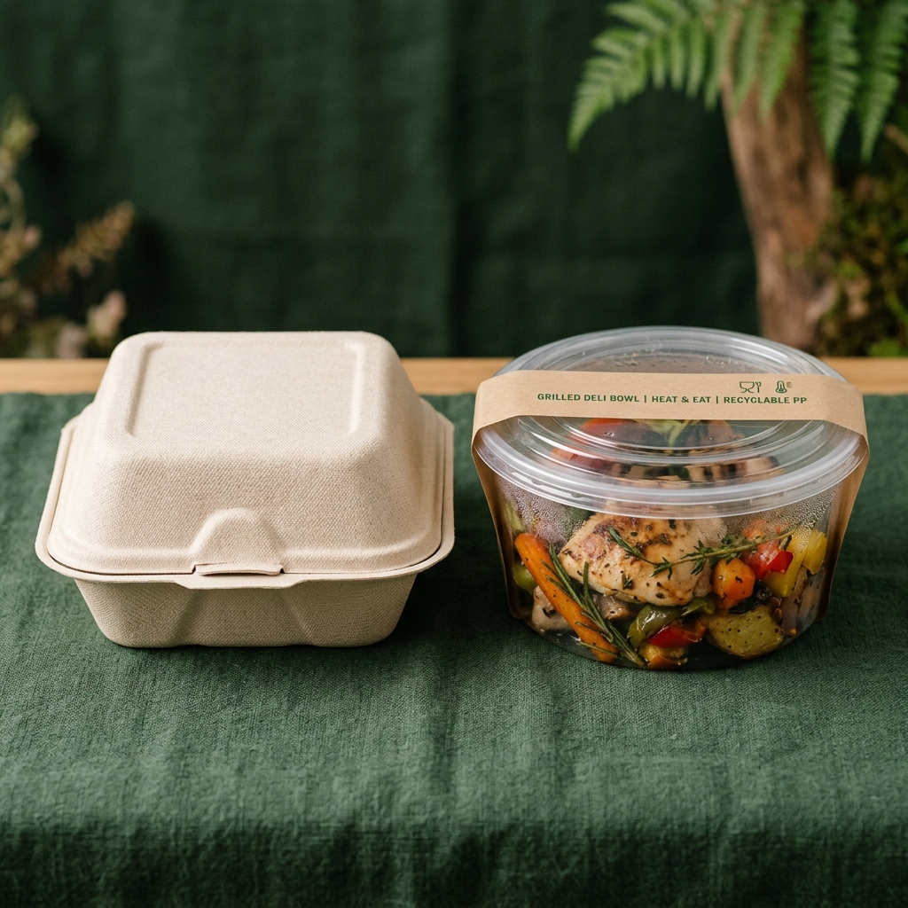

Замена пакета из 100% Virgin Plastic на термостойкую эко-упаковку с прозрачным окном
Для холодных отделов уже применяется 100% переработанный пластик. Главная нерешённая задача ритейла — горячая кулинария и гриль (200–250 °C): упаковка должна держать жар до 6 часов на тепловой полке, блокировать жир без выделения ворса, иметь прозрачное смотровое окно и снижать первичный пластик по строгой формуле: Общий пластик − Вторсырьё (Recycled) = Первичный пластик (Virgin Plastic)
Термостойкость без плавления
Стабильность полимерной и целлюлозной матрицы при фасовке с гриля и разогреве без деформации.
Удержание на горячей полке
Сохранение прочности швов и товарного вида блюда в тепловой витрине (+85…+110 °C) в течение 6 часов.
Жиробарьер и чистота продукта
Минерально-биополимерный барьер не пропускает горячее масло и полностью исключает прилипание волокон к курице.
Прозрачное смотровое окно
Покупатель видит румяную корочку продукта на полке без необходимости вскрывать упаковку.
Целая курица и малые порции
Формат L с донной складкой для целой курицы-гриль (до 1.8 кг) и формат S/M для крылышек, бёдер и картофеля.
Реализуемая экономика
Удорожание в пределах допустимых +11.5% при полной перерабатываемости (Recyclable) и минимуме слоёв.
Рекомендуемый физический концепт: Термо-пакеты с окном (Размеры L и S/M)

Термо-пакет ThermoKraft-250™ Window (Размер L — Целая курица-гриль)
Прямая замена текущего полимерного пакета на высокоплотный термостойкий пакет с широким дном (Gusset 110 мм) под целую курицу (до 1.8 кг) и панорамным окном из кристаллического 85% rBOPET. Выдерживает 250 °C и 6 часов на горячей витрине.
- Слой 1 (Несущий): Длинноволокнистый крафт FSC 75 г/м² (13.5 г, 100% Recyclable CEPI)
- Слой 2 (Внутренний): Силикатно-биополимерный жиробарьер Kit 12 (0% PFAS, запечатывает волокна — 0% ворса на еде)
- Смотровое окно: Термостойкая плёнка rBOPET 250°C Anti-Fog (2.0 г пластика, из них 85% вторсырьё = всего 0.30 г Virgin Plastic)
Сравнение с текущим пакетом Profi (5-угольный график преимуществ)
Паспорт сравнения (TDS)
Наведите на кнопку, чтобы сравнить показатели

Термо-пакет ThermoKraft-250™ Compact (Размер S/M — Крылышки, бёдра, картофель)
Компактная модификация (220×160×65 мм, порции 300–600 г) для жареного картофеля, куриных крылышек и бёдер. Снабжена широким прозрачным окном с защитой от запотевания и микроперфорацией отвода лишнего пара для сохранения хрустящей корочки.
- Слой 1 (Несущий): Термо-крафт FSC 65 г/м² (8.0 г бумаги, 100% макулатурный поток)
- Слой 2 (Внутренний): Жиростойкий дисперсионный барьер Kit 12 (не размокает от масла, 0% волокон на картофеле и мясе)
- Смотровое окно: Кристаллический rBOPET 250°C (1.2 г пластика, 85% вторсырьё = всего 0.18 г Virgin Plastic)
Сравнение с текущим пакетом Profi (5-угольный график преимуществ)
Паспорт сравнения (TDS)
Наведите на кнопку, чтобы сравнить показатели
Альтернатива из 85% rPET и сравнение «Пакет против Жёсткой Коробки»

Прозрачный моно-пакет rBOPET-250™ (85% Recycled PET • Размеры S/M и L)
Решение для случаев, когда требуется полностью полимерный пакет с обзором 360°. Изготовлен из одного слоя двуосно-ориентированного кристаллического ПЭТ с 85% постпотребительского рециклата (PCR). Сокращает Virgin Plastic с 14.5 г до 1.80 г (-87.6%).
- Моно-матрица (12.0 г): Кристаллический термофиксированный rBOPET (85% вторсырьё = 10.2 г rPET, всего 1.80 г Virgin Plastic)
- Отсутствие ламинации: Не содержит алюминия, полиамида (PA) или клеевых прослоек — идёт напрямую в поток ПЭТ
- Обзор и защита: 100% прозрачное окно 360°, абсолютная жиростойкость, 0% волокон
Сравнение с текущим пакетом Profi (5-угольный график преимуществ)
Паспорт сравнения (TDS)
Наведите на кнопку, чтобы сравнить показатели

Жёсткий лоток Faerch CPET C 2200-1L + Прозрачное окно-плёнка (80% rPET)
Инженерная проверка замены пакета на жёсткую коробку (TDS Faerch #2200012097): жёсткий лоток увеличивает общий расход материала до 23.5 г (+62% тяжелее пакета) и не вмещает целую курицу без резкого удорожания (+19%). Оправдан только для порционных блюд S/M при доле rPET ≥ 80%.
- Корпус лотка (21.38 г): Кристаллический CPET Evolve (80% rPET = 17.1 г вторсырья, 4.28 г Virgin Plastic)
- Прозрачное окно-крышка (2.12 г): Верхняя запаечная плёнка rBOPET Anti-Fog (80% rPET = 0.42 г Virgin Plastic)
- Ограничение геометрии: Глубина 47.1 мм подходит для крылышек/гарниров, но не вмещает целую курицу-гриль
Сравнение с текущим пакетом Profi (5-угольный график преимуществ)
Паспорт сравнения (TDS)
Наведите на кнопку, чтобы сравнить показатели
Сводная инженерная матрица: Доказательство выбора концепта
| Критерий оценки | 🔴 Текущий пакет Profi (База) | 🏆 ThermoKraft-250™ с окном (S/M и L) | 🥈 Моно-пакет rBOPET-250™ | ⚖️ Жёсткая коробка CPET (Топ-сил) |
|---|---|---|---|---|
| Форм-фактор и Общая масса (Размер L) | Гибкий пакет • 14.5 г | Гибкий пакет • 15.5 г (13.5г крафт + 2.0г окно) | Гибкий пакет • 12.0 г | Жёсткий лоток • 23.5 г (тяжелее на +62%) |
| Расчёт Virgin Plastic (Общий пластик − Вторсырьё) |
14.5 г − 0 г = 14.50 г (100% Virgin) | 2.0 г − 1.7 г (85% rPET) = 0.30 г (-97.9%) | 12.0 г − 10.2 г (85% rPET) = 1.80 г (-87.6%) | 23.5 г − 18.8 г (80% rPET) = 4.70 г (-67.6%) |
| Термостойкость 200–250 °C и 6ч полки | Выдерживает 200 °C, эффект парника | ✅ 250 °C • 6+ часов (отвод пара, корочка) | ✅ 250 °C • 6+ часов | ✅ 220 °C • 6+ часов (TDS Faerch) |
| Жиростойкость и отсутствие ворса | Синтетический барьер (0% ворса) | ✅ Kit 12 (PFAS-free) • 0% волокон на еде | ✅ 100% барьер • 0% волокон | ✅ 100% барьер • 0% волокон |
| Прозрачное смотровое окно | Частичное или мутное | ✅ Панорамное окно rBOPET Anti-Fog | ✅ Прозрачность 360° Anti-Fog | ✅ Прозрачная верхняя плёнка |
| Покрытие размеров (Крылышки S/M + Целая курица L) | Оба размера (S/M и L) | ✅ S/M (порции) + L (целая курица до 1.8 кг) | ✅ S/M (порции) + L (целая курица) | ❌ Только S/M (целая курица не входит) |
| Перерабатываемость (Recyclability) | ❌ Смешанный композит (на полигон) | ✅ Макулатура CEPI (2 слоя без ПЭ-плёнки) | ✅ Поток ПЭТ (RecyClass Class A) | ✅ Поток ПЭТ (требует отделения плёнки) |
| Изменение стоимости (Допуск до +10…15%) | Базовая цена (0%) | ✅ +10.2% (S/M) / +11.5% (L) — В ДОПУСКЕ | ✅ +12.8% — В ДОПУСКЕ | ⚠️ +18.5% (превышает порог +15%) |